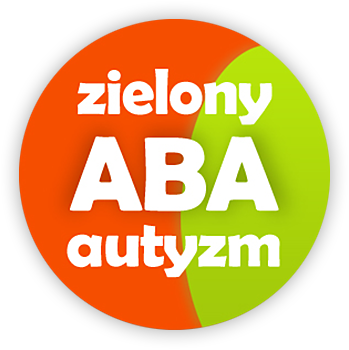
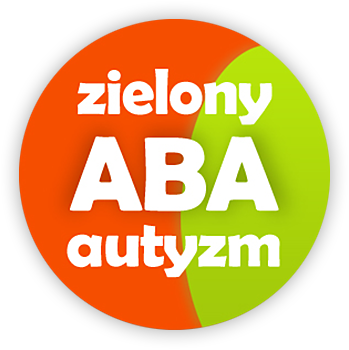

MISJA FUNDACJI
Podstawowym celem naszej Fundacji jest niesienie wszechstronnej pomocy dzieciom z zaburzeniami rozwoju, szczególnie dzieciom z autyzmem i ich rodzinom. Autyzm jest zaburzeniem rozwojowym diagnozowanym we wczesnym dzieciństwie i trwającym przez całe życie. Może objawiać się zaburzeniami we wszystkich sferach funkcjonowania dziecka i u różnych dzieci powodować różne trudności związane z codziennym funkcjonowaniem w środowisku.
Wczesne rozpoczęcie terapii może znacząco odmienić życie każdego dziecka. Dzieci poddane intensywnej terapii mają większe szanse na włączenie w grupę rówieśniczą przedszkolną lub szkolną — nawet te, które wcześniej miały duże trudności w funkcjonowaniu.
 
